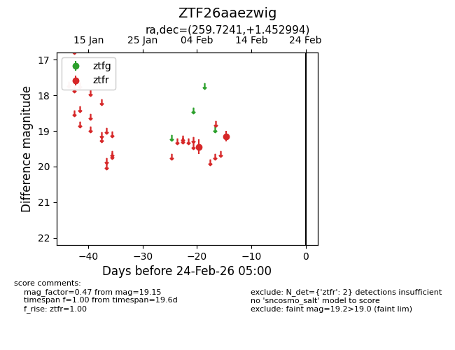
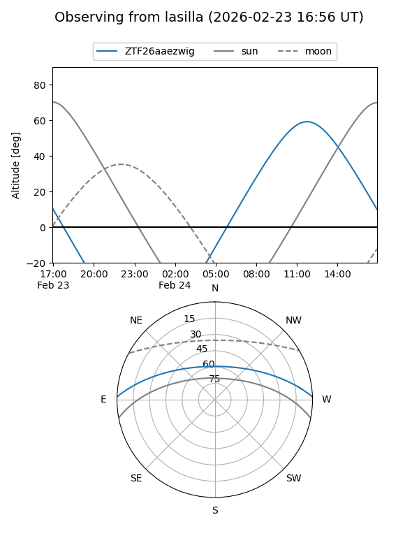
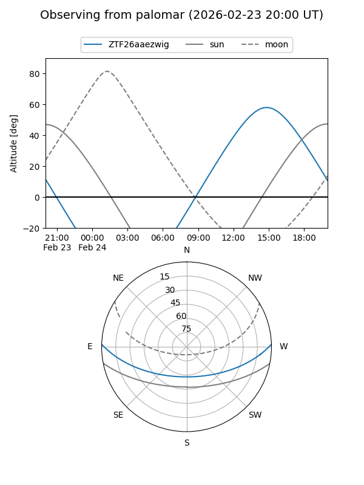

ZTF26aaezwig
Target ZTF26aaezwig at 2026-02-24 09:08
Aliases and brokers:
FINK: link
Lasair: link
ALeRCE: link
alt names
ZTF26aaezwig (ztf,fink_ztf)
Coordinates:
equatorial (ra, dec) = 259.7241,+1.45299
equatorial (HMS+DMS) = 17:18:53.79,+01:27:10.78
galactic (l, b) = (23.2684,+21.16962)
Flags:
Photometry:
last ztfr=19.15
2 ztfr detections
Lightcurve

Visibility


Additional plots